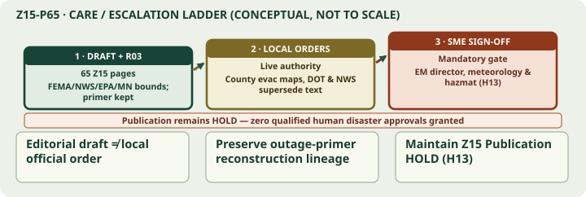

Z15-P65 · Disaster scenarios · New manuscript
Maintain Z15 hazard-specialist holds, primer lineage, and publication HOLD
Preserve explicit governance gates, local-authority supremacy, and primer reconstruction traceability across all 65 pages of Zone Z15.
When it applies · Governance, editorial review, and specialist sign-off across all 65 pages of Zone Z15 (Disaster Scenarios, including its retained outage-food primer reconstruction).
Equipment · Astra A01 specialist review register (H13 and P15 updates), disasters evidence pack (`disasters.md`), and local county emergency-management plans.

Actions
- Preserve the zone's starter outage-food card explicitly as a labeled `Reconstruction draft` tied to the unrecovered Thirty-Day Outage Operations primer while keeping all 64 newly authored Z15 cards bound to current FEMA/Ready.gov, NWS, US EPA/AirNow, CDC, and Minnesota HSEM guidance.[D01, F04, ED]
- Reinforce across every scenario that local jurisdictional alerts, law-enforcement road closures, county evacuation maps, and live NWS/fire/hazmat directives ALWAYS supersede generalized encyclopedia guidance—no draft text predicts site-specific disaster safety.[D01, D14, D15]
- Maintain `publication: HOLD` and zero qualified human approvals across all 65 Z15 pages until qualified emergency-management directors, meteorologists, air-quality/public-health specialists, hazmat responders, and accessibility planners complete formal sign-off (`H13`).[D01, D06, ED]
Failure recognition · Distributing unreviewed disaster-scenario drafts as official local emergency instructions without county/jurisdictional alignment or qualified specialist review.[D01, ED]
Verify · Confirm the primer reconstruction label is preserved, zero flood-driving or tornado-overpass errors exist, and `publication: HOLD` stays active on all 65 Z15 cards.[D05, D03, ED]
Stop or change course · Do NOT lift `publication: HOLD` or merge into `main` until Astra technical audit and qualified hazard/emergency-management reviews are recorded in the custody ledger.[D01, ED]
Evidence and editorial notes
- D01 · FEMA / Ready.gov · Be Informed and Multi-Hazard Preparedness (current web edition)
- Section: Be Informed > Local Hazard Assessment, Alerts, and Jurisdiction Mapping · Conditions: Households preparing for regional multi-hazard emergencies
Support: Identify specific local hazards, sign up for county/municipal opt-in alerts alongside WEA/EAS and NOAA Weather Radio, know official evacuation zone labels, and review household plans twice yearly.
Limitations: Emergency warning systems, siren policies, and shelter locations vary strictly by county and municipality. · Conflicting evidence: None; aligns with T14 and T15.
Editorial note: Establishes jurisdiction-specific alert and planning baseline in Z15. · Specialist reviewer: Emergency management specialist
Primary source · checked 2026-11-24 - D03 · FEMA / Ready.gov · Tornadoes (current web edition)
- Section: Tornadoes > Watch vs Warning, Safe Room Selection, and Post-Storm Hazards · Conditions: Developing supercells, Tornado Watches, and Tornado Warnings
Support: Act immediately on a Tornado Warning by moving to a FEMA safe room, storm shelter, basement, or lowest-level small interior room away from windows; protect head/neck from flying debris, never shelter in vehicles/mobile homes or under overpasses, and watch for downed power lines and gas leaks afterward.
Limitations: Outdoor sirens are designed to alert people outdoors and may be inaudible inside insulated homes during storms. · Conflicting evidence: None; aligns with E17 and NWS-TORNADO.
Editorial note: Core tornado shelter-selection and post-storm hazard evidence in Z15. · Specialist reviewer: Meteorology and emergency management
Primary source · checked 2026-11-24 - D05 · FEMA / Ready.gov · Floods (current web edition)
- Section: Floods > Flash Flood Evacuation, Turn Around Don't Drown, and Re-Entry · Conditions: River flooding, urban flash flooding, dam/levee risk, and post-flood return
Support: Evacuate early when ordered, move to higher ground immediately on Flash Flood Warnings, never walk or drive through floodwater (6 inches knocks down adults; 12 inches carries most cars), and never enter flood-damaged homes until electrical, gas, and structural hazards are cleared.
Limitations: Floodwaters commonly contain raw sewage, fuel, submerged debris, and energized downed wiring. · Conflicting evidence: None; aligns with T07, T16, and N10.
Editorial note: Core flood evacuation, water-avoidance, and safe re-entry evidence. · Specialist reviewer: Emergency management and flood hydrology
Primary source · checked 2026-11-24 - D06 · US EPA / AirNow · Wildfires and Air Quality (current web edition)
- Section: Wildfires and Air Quality > AQI Categories and Exposure Reduction · Conditions: Regional or local wildfire smoke plumes impacting air quality
Support: Monitor live official AirNow AQI readings and local health advisories; move indoors with windows/doors closed during Unhealthy AQI levels, limit heavy exertion, and use properly fitted NIOSH-approved N95/P100 particulate respirators if essential outdoor exposure cannot be avoided.
Limitations: Surgical masks, bandanas, and dust masks do not seal against fine PM2.5 wildfire smoke particles; N95s do not protect against carbon monoxide or low oxygen. · Conflicting evidence: None; complements C19 and READY-WILDFIRE.
Editorial note: Grounds AQI smoke thresholds and respiratory protection limits in Z15. · Specialist reviewer: Environmental health and air-quality specialist
Primary source · checked 2026-11-24 - D14 · FEMA / Ready.gov · Evacuation (current web edition)
- Section: Household Evacuation Logistics, Go-Bags, and Shelter Registration · Conditions: Mandatory or voluntary evacuations across multi-hazard disasters
Support: Pre-pack grab-and-go kits (medications, IDs, water, warm layers, chargers, pet gear), maintain at least two independent route options out of the neighborhood, notify out-of-area contacts upon departure, and register status through official shelter/Red Cross Safe & Well channels.
Limitations: GPS navigation apps can route evacuees onto flooded, smoke-blocked, or closed secondary roads; follow live law-enforcement and DOT closures. · Conflicting evidence: None; operationalizes T13 into household evacuation execution.
Editorial note: Core evacuation execution and accountability evidence in Z15. · Specialist reviewer: Emergency management and transportation safety
Primary source · checked 2026-11-24 - D15 · FEMA / Ready.gov · Hazardous Materials Incidents (current web edition)
- Section: Shelter-in-Place for Chemical, Hazmat, or Airborne Releases · Conditions: Hazardous-material rail/highway spills, industrial plumes, or official Shelter-in-Place orders
Support: Move indoors immediately, close and lock exterior doors and windows, shut off HVAC/ventilation fans that draw outdoor air, move to an interior room, seal gaps temporarily with plastic sheeting and duct tape ONLY when officially directed, and exit promptly when officials issue the all-clear to avoid CO2 buildup.
Limitations: Improvised room sealing is short-duration (typically hours, not days) and cannot substitute for evacuation if authorities order departure. · Conflicting evidence: None; distinguishes hazmat sealing from wildfire clean-room filtration.
Editorial note: Core hazmat shelter-in-place and ventilation-shutoff boundary. · Specialist reviewer: Hazmat response and emergency management
Primary source · checked 2026-11-24 - F04 · USDA / FDA / CDC · Food Safety During Power Outage (current web edition)
- Section: Refrigerated food and power outages · Conditions: Refrigerator starts cold; keep door closed
Support: An unopened refrigerator keeps food cold for about four hours. Follow the per-item discard chart after loss of temperature control. Never taste to test.
Limitations: Door openings accelerate warming; appliance thermometer is needed to verify temperature. · Conflicting evidence: None; retained for Z15 reconstruction.
Editorial note: Maintains five-pack integrity. · Specialist reviewer: Food safety and household preparedness
Primary source · checked 2026-11-24
Source lineage · Astra A01 Specialist Register and Ready.gov (retaining Z15-R03); new manuscript · Classification · New manuscript.